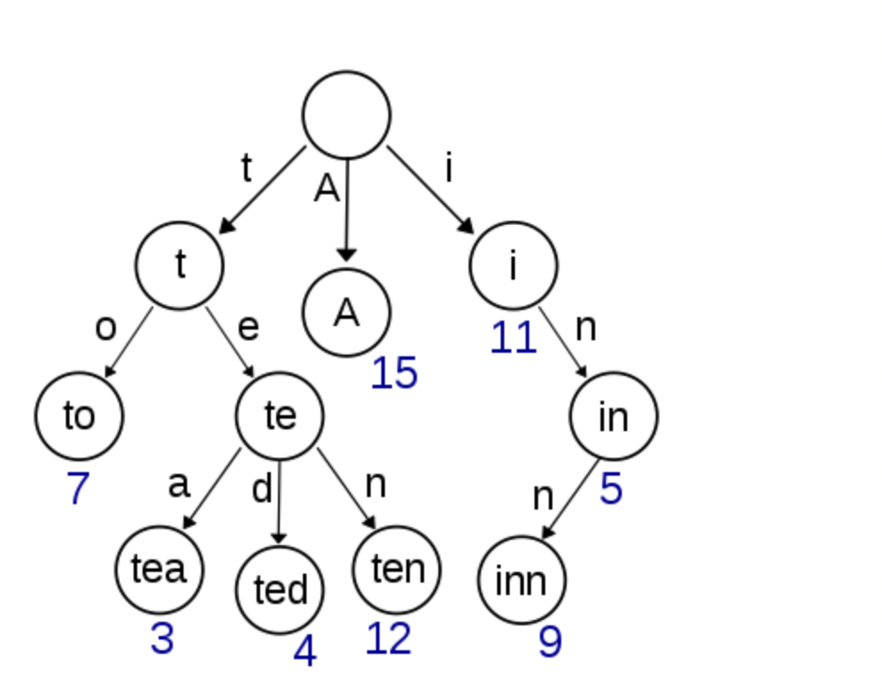
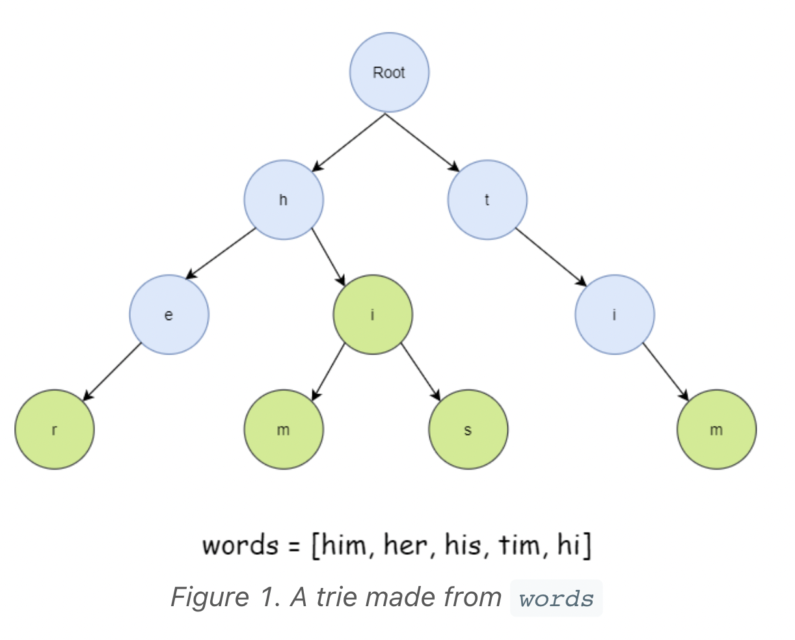

Trie
Last updated: Sep 2, 2025Table of Contents
- 0) Concept
- 0-1) Types
- 0-2) Pattern
- Template 2: Trie with Array (Fixed Alphabet)
- Template 3: Trie with Wildcard Support
- Template 4: Autocomplete Trie
- Template 5: Binary Trie (XOR Problems)
- Template 6: Trie with Delete Operation
- 1) General form
- 1-1) Basic OP
- 2) LC Example
- 2-1) Implement Trie (Prefix Tree)
- 2-2) Add and Search Word - Data structure design
- 2-3) Search Suggestions System
- 2-4) Word Search
- 2-5) Word Search II
Trie
Whenever we come across questions with multiple strings, it is best to think if Trie can help us.
0) Concept
- https://blog.csdn.net/fuxuemingzhu/article/details/79388432
- tree + dict
put Node into dict(e.g. defaultdict(Node))


0-1) Types
0-2) Pattern
class TrieNode:
def __init__(self):
self.children = {} # HashMap for flexible alphabet
self.is_end = False
self.word = None # Store complete word (optional)
class Trie:
def __init__(self):
self.root = TrieNode()
def insert(self, word: str) -> None:
"""Insert word into trie. Time: O(m), Space: O(m)"""
node = self.root
for char in word:
if char not in node.children:
node.children[char] = TrieNode()
node = node.children[char]
node.is_end = True
node.word = word # Store for easy retrieval
def search(self, word: str) -> bool:
"""Search for exact word. Time: O(m)"""
node = self.root
for char in word:
if char not in node.children:
return False
node = node.children[char]
return node.is_end
def startsWith(self, prefix: str) -> bool:
"""Check if any word starts with prefix. Time: O(p)"""
node = self.root
for char in prefix:
if char not in node.children:
return False
node = node.children[char]
return True
# Java version
class TrieNode {
Map<Character, TrieNode> children;
boolean isEnd;
String word;
public TrieNode() {
children = new HashMap<>();
isEnd = false;
word = null;
}
}
class Trie {
private TrieNode root;
public Trie() {
root = new TrieNode();
}
public void insert(String word) {
TrieNode node = root;
for (char c : word.toCharArray()) {
node.children.putIfAbsent(c, new TrieNode());
node = node.children.get(c);
}
node.isEnd = true;
node.word = word;
}
public boolean search(String word) {
TrieNode node = root;
for (char c : word.toCharArray()) {
if (!node.children.containsKey(c)) {
return false;
}
node = node.children.get(c);
}
return node.isEnd;
}
public boolean startsWith(String prefix) {
TrieNode node = root;
for (char c : prefix.toCharArray()) {
if (!node.children.containsKey(c)) {
return false;
}
node = node.children.get(c);
}
return true;
}
}
Template 2: Trie with Array (Fixed Alphabet)
class TrieNode:
def __init__(self):
self.children = [None] * 26 # For lowercase letters only
self.is_end = False
class Trie:
def __init__(self):
self.root = TrieNode()
def insert(self, word: str) -> None:
node = self.root
for char in word:
idx = ord(char) - ord('a')
if not node.children[idx]:
node.children[idx] = TrieNode()
node = node.children[idx]
node.is_end = True
def search(self, word: str) -> bool:
node = self._search_prefix(word)
return node is not None and node.is_end
def startsWith(self, prefix: str) -> bool:
return self._search_prefix(prefix) is not None
def _search_prefix(self, prefix: str) -> TrieNode:
node = self.root
for char in prefix:
idx = ord(char) - ord('a')
if not node.children[idx]:
return None
node = node.children[idx]
return node
# Java version
class TrieNode {
TrieNode[] children;
boolean isEnd;
public TrieNode() {
children = new TrieNode[26];
isEnd = false;
}
}
Template 3: Trie with Wildcard Support
class WildcardTrie:
def __init__(self):
self.root = TrieNode()
def insert(self, word: str) -> None:
node = self.root
for char in word:
if char not in node.children:
node.children[char] = TrieNode()
node = node.children[char]
node.is_end = True
def search(self, word: str) -> bool:
"""Search with '.' as wildcard for any character"""
return self._dfs_search(word, 0, self.root)
def _dfs_search(self, word: str, index: int, node: TrieNode) -> bool:
if index == len(word):
return node.is_end
char = word[index]
if char == '.':
# Try all possible children
for child in node.children.values():
if self._dfs_search(word, index + 1, child):
return True
return False
else:
if char not in node.children:
return False
return self._dfs_search(word, index + 1, node.children[char])
# Java version
public boolean search(String word) {
return dfsSearch(word, 0, root);
}
private boolean dfsSearch(String word, int index, TrieNode node) {
if (index == word.length()) {
return node.isEnd;
}
char c = word.charAt(index);
if (c == '.') {
for (TrieNode child : node.children.values()) {
if (dfsSearch(word, index + 1, child)) {
return true;
}
}
return false;
} else {
if (!node.children.containsKey(c)) {
return false;
}
return dfsSearch(word, index + 1, node.children.get(c));
}
}
Template 4: Autocomplete Trie
class AutocompleteTrie:
def __init__(self):
self.root = TrieNode()
def insert(self, word: str) -> None:
node = self.root
for char in word:
if char not in node.children:
node.children[char] = TrieNode()
node = node.children[char]
node.is_end = True
node.word = word
def search_prefix(self, prefix: str, limit: int = 3) -> List[str]:
"""Return up to 'limit' words with given prefix"""
node = self.root
# Navigate to prefix end
for char in prefix:
if char not in node.children:
return []
node = node.children[char]
# Collect all words with this prefix
results = []
self._dfs_collect(node, results, limit)
return results
def _dfs_collect(self, node: TrieNode, results: List[str], limit: int):
if len(results) >= limit:
return
if node.is_end:
results.append(node.word)
# Traverse in lexicographical order
for char in sorted(node.children.keys()):
self._dfs_collect(node.children[char], results, limit)
# Java version with priority queue for top suggestions
class AutocompleteTrie {
class TrieNode {
Map<Character, TrieNode> children = new HashMap<>();
Map<String, Integer> counts = new HashMap<>(); // Word -> frequency
}
public List<String> getTopSuggestions(String prefix, int k) {
TrieNode node = root;
for (char c : prefix.toCharArray()) {
if (!node.children.containsKey(c)) {
return new ArrayList<>();
}
node = node.children.get(c);
}
// Use heap to get top k
PriorityQueue<Map.Entry<String, Integer>> pq = new PriorityQueue<>(
(a, b) -> b.getValue() - a.getValue()
);
pq.addAll(node.counts.entrySet());
List<String> result = new ArrayList<>();
while (!pq.isEmpty() && result.size() < k) {
result.add(pq.poll().getKey());
}
return result;
}
}
Template 5: Binary Trie (XOR Problems)
class BinaryTrie:
class Node:
def __init__(self):
self.children = [None, None] # 0 and 1
self.count = 0
def __init__(self):
self.root = self.Node()
def insert(self, num: int) -> None:
"""Insert number as 32-bit binary"""
node = self.root
for i in range(31, -1, -1):
bit = (num >> i) & 1
if not node.children[bit]:
node.children[bit] = self.Node()
node = node.children[bit]
node.count += 1
def find_max_xor(self, num: int) -> int:
"""Find maximum XOR with num"""
node = self.root
max_xor = 0
for i in range(31, -1, -1):
bit = (num >> i) & 1
# Try to go opposite direction for max XOR
toggled = 1 - bit
if node.children[toggled] and node.children[toggled].count > 0:
max_xor |= (1 << i)
node = node.children[toggled]
else:
node = node.children[bit]
return max_xor
def remove(self, num: int) -> None:
"""Remove number from trie"""
node = self.root
for i in range(31, -1, -1):
bit = (num >> i) & 1
node = node.children[bit]
node.count -= 1
# Java version
class BinaryTrie {
class Node {
Node[] children = new Node[2];
int count = 0;
}
private Node root = new Node();
public void insert(int num) {
Node node = root;
for (int i = 31; i >= 0; i--) {
int bit = (num >> i) & 1;
if (node.children[bit] == null) {
node.children[bit] = new Node();
}
node = node.children[bit];
node.count++;
}
}
public int findMaxXor(int num) {
Node node = root;
int maxXor = 0;
for (int i = 31; i >= 0; i--) {
int bit = (num >> i) & 1;
int toggled = 1 - bit;
if (node.children[toggled] != null && node.children[toggled].count > 0) {
maxXor |= (1 << i);
node = node.children[toggled];
} else {
node = node.children[bit];
}
}
return maxXor;
}
}
Template 6: Trie with Delete Operation
// java
// LC 208 (Modified)
// V0
// IDEA : https://github.com/yennanliu/CS_basics/blob/master/leetcode_python/Tree/implement-trie-prefix-tree.py#L49
// modified by GPT
class TrieNode {
/** NOTE !!!!
*
* Define children as map structure:
*
* Map<String, TrieNode>
*
* -> string : current "element"
* -> TrieNode : the child object
*
*/
Map<String, TrieNode> children;
boolean isWord;
public TrieNode() {
children = new HashMap<>();
isWord = false;
}
}
/**
* NOTE !!!
*
* Define 2 classes
*
* 1) TrieNode
* 2) Trie
*
*/
class Trie {
TrieNode root;
public Trie() {
root = new TrieNode();
}
public void insert(String word) {
/**
* NOTE !!! get current node first
*/
TrieNode cur = root;
for (String c : word.split("")) {
cur.children.putIfAbsent(c, new TrieNode());
// move node to its child
cur = cur.children.get(c);
}
cur.isWord = true;
}
public boolean search(String word) {
/**
* NOTE !!! get current node first
*/
TrieNode cur = root;
for (String c : word.split("")) {
cur = cur.children.get(c);
if (cur == null) {
return false;
}
}
return cur.isWord;
}
public boolean startsWith(String prefix) {
/**
* NOTE !!! get current node first
*/
TrieNode cur = root;
for (String c : prefix.split("")) {
cur = cur.children.get(c);
if (cur == null) {
return false;
}
}
return true;
}
}
# python
#--------------------------
# V1
#--------------------------
from collections import defaultdict
### NOTE : need to define our Node
class Node():
def __init__(self):
"""
NOTE : we use defaultdict(Node) as our trie data structure
-> use defaultdict
- key : every character from word
- value : Node (Node type)
and link children with parent Node via defaultdict
"""
self.children = defaultdict(Node)
self.isword = False
# implement basic methods
class Trie():
def __init__(self):
self.root = Node()
def insert(self, word):
### NOTE : we always start from below
cur = self.root
for w in word:
cur = cur.children[w] # same as self.root.defaultdict[w]
cur.isword = True
def search(self, word):
### NOTE : we always start from below
cur = self.root
for w in word:
cur = cur.children.get(w)
if not cur:
return False
### NOTE : need to check if isword
return cur.isword
def startsWith(self, prefix):
### NOTE : we always start from below
cur = self.root
for p in prefix:
cur = cur.children.get(p)
if not cur:
return False
return True
1) General form
1-1) Basic OP
2) LC Example
2-1) Implement Trie (Prefix Tree)
# 208. Implement Trie (Prefix Tree)
# V0
# IDEA : trie concept : dict + tree
# https://blog.csdn.net/fuxuemingzhu/article/details/79388432
### NOTE : we need implement Node class
from collections import defaultdict
class Node(object):
def __init__(self):
### NOTE : we use defaultdict as dict
# TODO : make a default py dict version
self.children = defaultdict(Node)
self.isword = False
class Trie(object):
def __init__(self):
"""
Initialize your data structure here.
"""
### NOTE : we use the Node class we implement above
self.root = Node()
def insert(self, word):
current = self.root
for w in word:
current = current.children[w]
### NOTE : if insert OP completed, mark isword attr as true
current.isword = True
def search(self, word):
current = self.root
for w in word:
current = current.children.get(w)
if current == None:
return False
### NOTE : we need to check if isword atts is true (check if word terminated here as well)
return current.isword
def startsWith(self, prefix):
current = self.root
for w in prefix:
current = current.children.get(w)
if current == None:
return False
### NOTE : we don't need to check isword here, since it is "startsWith"
return True
// java
// LC 208
// V1
// https://leetcode.com/problems/implement-trie-prefix-tree/editorial/
class TrieNode {
// R links to node children
private TrieNode[] links;
private final int R = 26;
private boolean isEnd;
public TrieNode() {
links = new TrieNode[R];
}
public boolean containsKey(char ch) {
return links[ch -'a'] != null;
}
public TrieNode get(char ch) {
return links[ch -'a'];
}
public void put(char ch, TrieNode node) {
links[ch -'a'] = node;
}
public void setEnd() {
isEnd = true;
}
public boolean isEnd() {
return isEnd;
}
}
class Trie2 {
private TrieNode root;
public Trie2() {
root = new TrieNode();
}
// Inserts a word into the trie.
public void insert(String word) {
TrieNode node = root;
for (int i = 0; i < word.length(); i++) {
char currentChar = word.charAt(i);
if (!node.containsKey(currentChar)) {
node.put(currentChar, new TrieNode());
}
node = node.get(currentChar);
}
node.setEnd();
}
// search a prefix or whole key in trie and
// returns the node where search ends
private TrieNode searchPrefix(String word) {
TrieNode node = root;
for (int i = 0; i < word.length(); i++) {
char curLetter = word.charAt(i);
if (node.containsKey(curLetter)) {
node = node.get(curLetter);
} else {
return null;
}
}
return node;
}
// Returns if the word is in the trie.
public boolean search(String word) {
TrieNode node = searchPrefix(word);
return node != null && node.isEnd();
}
// Returns if there is any word in the trie
// that starts with the given prefix.
public boolean startsWith(String prefix) {
TrieNode node = searchPrefix(prefix);
return node != null;
}
}
2-2) Add and Search Word - Data structure design
# LC 211 Add and Search Word - Data structure design
# V0
from collections import defaultdict
class Node(object):
def __init__(self):
self.children = defaultdict(Node)
self.isword = False
class WordDictionary(object):
def __init__(self):
self.root = Node()
def addWord(self, word):
current = self.root
for w in word:
_next = current.children[w]
current = _next
current.isword = True
def search(self, word):
return self.match(word, 0, self.root)
def match(self, word, index, root):
"""
NOTE : match is a helper func (for search)
- deal with 2 cases
- 1) word[index] != '.'
- 2) word[index] == '.'
"""
# note the edge cases
if root == None:
return False
if index == len(word):
return root.isword
# CASE 1: word[index] != '.'
if word[index] != '.':
return root != None and self.match(word, index + 1, root.children.get(word[index]))
# CASE 2: word[index] == '.'
else:
for child in root.children.values():
if self.match(word, index + 1, child):
return True
return False
// java
// LC 211
// V1
// IDEA : TRIE
// https://leetcode.com/problems/design-add-and-search-words-data-structure/editorial/
class TrieNode {
Map<Character, TrieNode> children = new HashMap();
boolean word = false;
public TrieNode() {}
}
class WordDictionary2 {
TrieNode trie;
/** Initialize your data structure here. */
public WordDictionary2() {
trie = new TrieNode();
}
/** Adds a word into the data structure. */
public void addWord(String word) {
TrieNode node = trie;
for (char ch : word.toCharArray()) {
if (!node.children.containsKey(ch)) {
node.children.put(ch, new TrieNode());
}
node = node.children.get(ch);
}
node.word = true;
}
/** Returns if the word is in the node. */
public boolean searchInNode(String word, TrieNode node) {
for (int i = 0; i < word.length(); ++i) {
char ch = word.charAt(i);
if (!node.children.containsKey(ch)) {
// if the current character is '.'
// check all possible nodes at this level
if (ch == '.') {
for (char x : node.children.keySet()) {
TrieNode child = node.children.get(x);
/** NOTE !!!
* -> if ".", we HAVE to go through all nodes in next levels
* -> and check if any of them is valid
* -> so we need to RECURSIVELY call searchInNode method with "i+1" sub string
*/
if (searchInNode(word.substring(i + 1), child)) {
return true;
}
}
}
// if no nodes lead to answer
// or the current character != '.'
return false;
} else {
// if the character is found
// go down to the next level in trie
node = node.children.get(ch);
}
}
return node.word;
}
/** Returns if the word is in the data structure. A word could contain the dot character '.' to represent any one letter. */
public boolean search(String word) {
return searchInNode(word, trie);
}
}
2-3) Search Suggestions System
# LC 1268. Search Suggestions System
# V1
# IDEA : TRIE
# https://leetcode.com/problems/search-suggestions-system/discuss/436183/Python-Trie-Solution
class TrieNode:
def __init__(self):
self.children = dict()
self.words = []
class Trie:
def __init__(self):
self.root = TrieNode()
def insert(self, word):
node = self.root
for char in word:
if char not in node.children:
node.children[char] = TrieNode()
node = node.children[char]
node.words.append(word)
node.words.sort()
while len(node.words) > 3:
node.words.pop()
def search(self, word):
res = []
node = self.root
for char in word:
if char not in node.children:
break
node = node.children[char]
res.append(node.words[:])
l_remain = len(word) - len(res)
for _ in range(l_remain):
res.append([])
return res
class Solution:
def suggestedProducts(self, products: List[str], searchWord: str):
trie = Trie()
for prod in products:
trie.insert(prod)
return trie.search(searchWord)
// IDEA : trie + dfs
// https://leetcode.com/problems/search-suggestions-system/solution/
// Custom class Trie with function to get 3 words starting with given prefix
class Trie {
// Node definition of a trie
class Node {
boolean isWord = false;
List<Node> children = Arrays.asList(new Node[26]);
};
Node Root, curr;
List<String> resultBuffer;
// Runs a DFS on trie starting with given prefix and adds all the words in the resultBuffer, limiting result size to 3
void dfsWithPrefix(Node curr, String word) {
if (resultBuffer.size() == 3)
return;
if (curr.isWord)
resultBuffer.add(word);
// Run DFS on all possible paths.
for (char c = 'a'; c <= 'z'; c++)
if (curr.children.get(c - 'a') != null)
dfsWithPrefix(curr.children.get(c - 'a'), word + c);
}
Trie() {
Root = new Node();
}
// Inserts the string in trie.
void insert(String s) {
// Points curr to the root of trie.
curr = Root;
for (char c : s.toCharArray()) {
if (curr.children.get(c - 'a') == null)
curr.children.set(c - 'a', new Node());
curr = curr.children.get(c - 'a');
}
// Mark this node as a completed word.
curr.isWord = true;
}
List<String> getWordsStartingWith(String prefix) {
curr = Root;
resultBuffer = new ArrayList<String>();
// Move curr to the end of prefix in its trie representation.
for (char c : prefix.toCharArray()) {
if (curr.children.get(c - 'a') == null)
return resultBuffer;
curr = curr.children.get(c - 'a');
}
dfsWithPrefix(curr, prefix);
return resultBuffer;
}
};
class Solution {
List<List<String>> suggestedProducts(String[] products,
String searchWord) {
Trie trie = new Trie();
List<List<String>> result = new ArrayList<>();
// Add all words to trie.
for (String w : products)
trie.insert(w);
String prefix = new String();
for (char c : searchWord.toCharArray()) {
prefix += c;
result.add(trie.getWordsStartingWith(prefix));
}
return result;
}
};
2-4) Word Search
# LC 79. Word Search
# V0
# IDEA : DFS + backtracking
class Solution(object):
def exist(self, board, word):
### NOTE : construct the visited matrix
visited = [[False for j in range(len(board[0]))] for i in range(len(board))]
"""
NOTE !!!! : we visit every element in board and trigger the dfs
"""
for i in range(len(board)):
for j in range(len(board[0])):
if self.dfs(board, word, 0, i, j, visited):
return True
return False
def dfs(self, board, word, cur, i, j, visited):
# if "not false" till cur == len(word), means we already found the wprd in board
if cur == len(word):
return True
### NOTE this condition
# 1) if idx out of range
# 2) if already visited
# 3) if board[i][j] != word[cur] -> not possible to be as same as word
if i < 0 or i >= len(board) or j < 0 or j >= len(board[0]) or visited[i][j] or board[i][j] != word[cur]:
return False
# NOTE THIS !! : mark as visited
visited[i][j] = True
### NOTE THIS TRICK (run the existRecu on 4 directions on the same time)
result = self.dfs(board, word, cur + 1, i + 1, j, visited) or\
self.dfs(board, word, cur + 1, i - 1, j, visited) or\
self.dfs(board, word, cur + 1, i, j + 1, visited) or\
self.dfs(board, word, cur + 1, i, j - 1, visited)
# mark as non-visited
visited[i][j] = False
return result
2-5) Word Search II
# LC 212. Word Search II
# V0
# IDEA : DFS + trie
# DEMO
# >>> words = ['oath', 'pea', 'eat', 'rain'], trie = {'o': {'a': {'t': {'h': {'#': None}}}}, 'p': {'e': {'a': {'#': None}}}, 'e': {'a': {'t': {'#': None}}}, 'r': {'a': {'i': {'n': {'#': None}}}}}
class Solution(object):
def checkList(self, board, row, col, word, trie, rList):
if row<0 or row>=len(board) or col<0 or col>=len(board[0]) or board[row][col] == '.' or board[row][col] not in trie:
return
c = board[row][col]
_word= word + c
if '#' in trie[c]:
rList.add(_word)
if len(trie[c]) == 1:
return # if next node is empty, return as no there is no need to search further
board[row][col] = '.'
self.checkList(board, row-1, col, _word, trie[c], rList) #up
self.checkList(board, row+1, col, _word, trie[c], rList) #down
self.checkList(board, row, col-1, _word, trie[c], rList) #left
self.checkList(board, row, col+1, _word, trie[c], rList) #right
board[row][col] = c
def findWords(self, board, words):
if not board or not words:
return []
# building Trie
trie, rList = {}, set()
for word in words:
t = trie
for c in word:
if c not in t:
t[c] = {}
t = t[c]
t['#'] = None
#print (">>> words = {}, trie = {}".format(words, trie))
for row in range(len(board)):
for col in range(len(board[0])):
if board[row][col] in trie:
self.checkList(board, row, col, "", trie, rList)
return list(rList)
# V1
# IDEA : Backtracking with Trie
# https://leetcode.com/problems/word-search-ii/solution/
class Solution:
def findWords(self, board, words):
WORD_KEY = '$'
trie = {}
for word in words:
node = trie
for letter in word:
# retrieve the next node; If not found, create a empty node.
node = node.setdefault(letter, {})
# mark the existence of a word in trie node
node[WORD_KEY] = word
rowNum = len(board)
colNum = len(board[0])
matchedWords = []
def backtracking(row, col, parent):
letter = board[row][col]
currNode = parent[letter]
# check if we find a match of word
word_match = currNode.pop(WORD_KEY, False)
if word_match:
# also we removed the matched word to avoid duplicates,
# as well as avoiding using set() for results.
matchedWords.append(word_match)
# Before the EXPLORATION, mark the cell as visited
board[row][col] = '#'
# Explore the neighbors in 4 directions, i.e. up, right, down, left
for (rowOffset, colOffset) in [(-1, 0), (0, 1), (1, 0), (0, -1)]:
newRow, newCol = row + rowOffset, col + colOffset
if newRow < 0 or newRow >= rowNum or newCol < 0 or newCol >= colNum:
continue
if not board[newRow][newCol] in currNode:
continue
backtracking(newRow, newCol, currNode)
# End of EXPLORATION, we restore the cell
board[row][col] = letter
# Optimization: incrementally remove the matched leaf node in Trie.
if not currNode:
parent.pop(letter)
for row in range(rowNum):
for col in range(colNum):
# starting from each of the cells
if board[row][col] in trie:
backtracking(row, col, trie)
return matchedWords
# V1'
# IDEA : DFS + trie
# https://leetcode.com/problems/word-search-ii/discuss/59808/Python-DFS-362ms
class Solution(object):
def checkList(self, board, row, col, word, trie, rList):
if row<0 or row>=len(board) or col<0 or col>=len(board[0]) or board[row][col] == '.' or board[row][col] not in trie: return
c = board[row][col]
_word= word + c
if '#' in trie[c]:
rList.add(_word)
if len(trie[c]) == 1: return # if next node is empty, return as no there is no need to search further
board[row][col] = '.'
self.checkList(board, row-1, col, _word, trie[c], rList) #up
self.checkList(board, row+1, col, _word, trie[c], rList) #down
self.checkList(board, row, col-1, _word, trie[c], rList) #left
self.checkList(board, row, col+1, _word, trie[c], rList) #right
board[row][col] = c
def findWords(self, board, words):
"""
:type board: List[List[str]]
:type words: List[str]
:rtype: List[str]
"""
if not board or not words: return []
# building Trie
trie, rList = {}, set()
for word in words:
t = trie
for c in word:
if c not in t: t[c] = {}
t = t[c]
t['#'] = None
for row in range(len(board)):
for col in range(len(board[0])):
if board[row][col] not in trie: continue
self.checkList(board, row, col, "", trie, rList)
return list(rList)